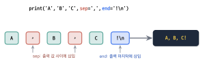
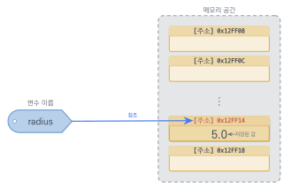
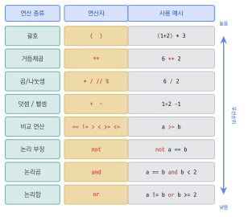
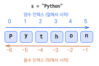
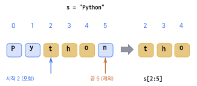

변수, 연산자, 문자열
이 장을 마치면
- 변수의 개념을 이해하고 자료형에 맞게 값을 저장·참조할 수 있다.
- 정수·실수·문자열·논리형 등 기본 자료형을 구분하여 활용할 수 있다.
- 산술·비교·논리 연산자로 수식과 조건식을 작성할 수 있다.
- 문자열 인덱싱·슬라이싱으로 부분 문자열을 추출할 수 있다.
- f-string으로 값을 문자열에 삽입해 보기 좋게 출력할 수 있다.
앞 장에서 파이썬을 설치하고 print() 함수로 간단한 메시지를 출력해 보았다. 이제 본격적으로 프로그래밍의 가장 기본적인 구성 요소인 변수와 연산자, 그리고 문자열을 배울 차례이다. 변수는 프로그램에서 데이터를 저장하고 관리하는 핵심적인 수단이며, 연산자는 저장된 데이터를 가공하고 처리하는 도구이다. 문자열은 프로그램에서 텍스트 데이터를 다루는 방법을 제공한다.
이 장에서는 먼저 print() 함수의 다양한 활용법과 주석문에 대해 알아본다. 이어서 변수가 왜 필요한지 실제 예제를 통해 체감하고, 변수에 값을 저장하고 사용하는 방법을 배운다. 또한 파이썬이 제공하는 다양한 자료형(정수, 실수, 문자열, 논리형)의 특징을 살펴보고, 산술 연산자, 비교 연산자, 논리 연산자 등을 사용하여 데이터를 처리하는 방법을 익힌다. 마지막으로 문자열을 생성하고, 인덱싱과 슬라이싱으로 원하는 부분을 추출하며, 다양한 문자열 메소드를 활용하는 방법을 배운다. 이 장에서 배우는 내용은 앞으로 모든 프로그래밍의 기초가 되므로 충분히 이해하고 넘어가는 것이 중요하다.
2.1 출력 함수 print()와 주석
print() 함수의 기본 사용법
파이썬은 대화식 실행 모드와 스크립트 실행 모드를 제공한다는 것을 앞 장에서 배웠다. 대화식 실행 모드에서는 파이썬 명령어를 대화창에 입력하면 바로 인터프리터의 반응(피드백)을 받을 수 있는 모드이다. 이와 다른 모드는 .py라는 확장자를 가지는 스크립트를 만들어서 파이썬 인터프리터에 한꺼번에 전달하여 실행시키는 스크립트 실행 모드이다. 이 책에서 간단한 코드를 테스트할 때는 주로 대화식 실행 모드를 사용할 것이며, 다소 복잡한 코드는 스크립트 파일을 만들어서 실행해 볼 것이다.
이제 본격적으로 변수와 연산자, 주석문에 대해서 알아보려고 한다. 이를 위해 파이썬의 수식이나 문자열을 출력하는 데에 매우 유용한 print() 함수에 대해 자세히 알아보자.
앞 장에서 우리는 다음과 같은 방식으로 화면에 Hello Python!!이라는 문자열(문자들의 나열)을 출력하였다. 문자열을 출력할 때에 'Hello Python!!'과 같이 작은따옴표를 사용하거나, "Hello Python!!"과 같이 큰따옴표를 사용했을 때 똑같은 결과가 나온다.
>>> print('Hello Python!!')
Hello Python!!
만일 이 문장에서 따옴표를 생략하면 어떻게 될까? 따옴표가 없으면 오류가 발생한다. 그 이유는 print() 함수 안에 들어 있는 Hello Python!!이 무엇인지 파이썬이 이해할 수 없기 때문이다. 즉, 파이썬과 같은 프로그래밍 언어는 주어진 문법에 맞게 입력된 명령문만 제대로 해석하여 실행할 수 있다.
여러 값을 함께 출력하기
print() 함수는 쉼표(,)로 구분하여 여러 값을 한 줄에 출력할 수 있다.
문자열과 숫자를 함께 출력하는 것도 가능하다. print('My age is', 20)과 같이 문자열과 숫자를 쉼표로 구분하여 출력하면 결과는 My age is 20이 출력된다. 또 print('Steps today', 8000, 'steps')와 같이 문자열, 쉼표, 숫자, 쉼표, 문자열 순서로 출력문을 만들어 보자. 결과는 아래와 같이 ‘Steps today 8000 steps’이 출력된다.
>>> print('My age is', 20)
My age is 20
>>> print('Steps today', 8000, 'steps')
Steps today 8000 steps
즉, 문자열과 쉼표로 구분된 숫자나 문자열은 print() 함수에서 같은 줄에 함께 출력된다는 것을 알 수 있다. 쉼표로 구분된 값들은 공백 하나를 사이에 두고 한 줄에 출력되며, print() 함수는 출력 후 자동으로 줄 바꿈을 수행한다.
print() 함수의 키워드 인자
print() 함수의 end 키워드 인자를 사용하면 출력 후 줄 바꿈 대신 다른 문자를 지정할 수 있다. print() 함수 내의 end라는 키워드 인자는 print() 함수에서 출력 후 내보낼 문자를 지정하는 역할을 한다. 기본값은 줄바꿈 문자( n)인데, 이를 공백이나 다른 문자로 바꾸면 출력 결과의 모양을 제어할 수 있다.
또한 sep 키워드 인자로 값들 사이의 구분 문자를 변경할 수 있다. 기본값은 공백 하나인데, 이를 하이픈이나 콤마 등으로 바꿀 수 있다.
# end 인자: 출력 후 줄 바꿈 대신 공백 사용
print('Hello', end=' ')
print('Python!')
# sep 인자: 값 사이의 구분 문자를 '-'로 변경
print('2025', '04', '07', sep='-')
# sep과 end를 함께 사용
print('A', 'B', 'C', sep=', ', end='!\n')Hello Python! 2025-04-07 A, B, C!
첫 번째 print() 문에서 end=' '로 지정하였으므로 출력 후 줄 바꿈 대신 공백이 출력된다. 따라서 두 번째 print() 문의 출력이 같은 줄에 이어서 나타나게 된다. 두 번째 예제에서는 sep='-'를 사용하여 세 개의 문자열 사이에 하이픈이 들어가도록 하였다. 이처럼 end와 sep 인자를 잘 활용하면 출력 형식을 자유롭게 조절할 수 있다.

그림 2.1은 print() 함수에서 sep과 end 인자가 출력 결과에 어떤 영향을 미치는지를 보여 준다. sep은 값들 사이에, end는 출력의 맨 끝에 삽입된다.
문자열의 반복 출력
문자열에 *(곱셈) 연산자를 사용하면 해당 문자열을 반복하여 출력할 수 있다. 파이썬은 문자열에 대하여 *(곱셈) 연산자를 이용하여 출력 횟수를 제어하는 것이 가능하다.
>>> print('Hello ' * 2)
Hello Hello
>>> print('Hello ' * 4)
Hello Hello Hello Hello
>>> print('=' * 30)
==============================
print() 함수 내에서 'Hello ' * 2를 하면 'Hello '가 두 번 반복하여 출력되며, 'Hello ' * 4를 하면 네 번 출력되는 것을 확인할 수 있다. 이 기능은 구분선을 출력하거나 특정 패턴을 반복할 때 유용하게 사용된다.
주석문
소스 코드에 # 기호를 붙이면 그 뒤의 내용은 주석문comment이 된다. 주석문은 프로그램이 하는 일을 설명하는 설명글과 같다. 이 부분은 프로그래밍 언어에서 소스 코드에 붙이는 설명글과 같다. 주석문은 # 기호로 시작하는데, 이 기호가 나타난 부분부터 줄의 끝까지 파이썬 인터프리터가 해석하지 않기 때문에 실행에 전혀 영향을 주지 않는다. 주석문은 코드의 의미를 다른 사람이나 미래의 자신이 이해할 수 있도록 설명하는 데 사용한다.
# 이 줄 전체가 주석 (실행되지 않음)
print('Hello') # 인라인 주석: # 뒤의 내용만 주석주석문은 프로그래머가 나중에 코드를 다시 읽을 때 "이 코드가 무슨 일을 하는지" 빠르게 파악할 수 있도록 도와준다. 잘 작성된 주석문은 코드의 가독성을 크게 높여주며, 팀으로 개발할 때는 더욱 중요하다. 처음 프로그래밍을 배울 때부터 적절한 주석을 다는 습관을 들이는 것이 좋다. PEP 8 스타일 가이드에서는 주석 작성에 대한 권장 사항도 제시하고 있으므로 참고하자.
print() 함수는 쉼표로 구분하여 여러 값을 한 줄에 출력할 수 있으며, 문자열과 숫자를 함께 출력하는 것도 가능하다. end 인자를 사용하면 출력 후 줄 바꿈 대신 다른 문자를 지정할 수 있고, sep 인자로 값들 사이의 구분 문자를 변경할 수 있다. 문자열에 * 연산자를 사용하면 반복 출력이 가능하다. # 기호 뒤의 내용은 주석으로, 프로그램 실행에 영향을 주지 않으면서 코드에 대한 설명을 남길 수 있다.
2.2 변수와 자료형
이 절에서는 프로그래밍을 더욱 유연하게 만들어 주는 변수의 개념을 이해한다. 그리고 변수에 담기는 값들이 어떤 종류로 구분되는지 표현하는 자료형에 대해 함께 살펴본다.
변수의 필요성
이 절에서는 변수의 필요성과 사용 방법을 알아보자. 예를 들어, 반지름이 4.0인 원의 면적과 둘레를 구하는 문제가 주어졌다고 가정하자. 원주율을 \(\pi\), 원의 반지름을 \(r\)이라고 할 때, 원의 둘레는 \(2\pi r\), 원의 면적은 \(\pi r^2\)이라는 공식을 통해서 계산할 수 있다.
이 계산을 수행하는 프로그램을 circle.py라는 이름으로 파이썬 IDLE 환경에서 작성하여 실행시켜 보자. 이때 원주율 값 \(\pi\)는 편의상 근사치인 3.14로 둔다.
print('Radius of circle', 4.0)
print('Area of circle', 3.14 * 4.0 * 4.0)
print('Circumference of circle', 2.0 * 3.14 * 4.0)Radius of circle 4.0 Area of circle 50.24 Circumference of circle 25.12
그런데, 만약 반지름이 5.0인 원의 면적과 둘레를 새로 구해야 한다면 어떻게 해야 할까? 우리는 위의 코드에서 4.0이 사용된 모든 곳을 5.0으로 수정해야만 한다. 만약 원의 반지름을 6.0으로 또 다시 고치려고 하면, 다음과 같이 이 작업을 반복해야 한다. 이것은 매우 번거로운 일이다. 이와 같이 반지름이 사용되는 곳이 여러 곳에 사용되고 상황이 바뀔 때마다 사용된 곳을 모두 찾아 그 값을 바꾸는 일은 귀찮은 일이다. 그리고 몇 개라도 빠트리고 수정하면 우리가 의도한 바와 다른 결과를 얻게 된다.
이러한 문제를 해결하기 위해 변수variable를 도입해 보자. 이제 다음과 같이 반지름을 의미하는 radius라는 이름의 변수를 사용할 것이다. 이 변수에 값을 저장하고 그 이후에는 값이 아니라 이 변수를 사용하는 것이다.
radius = 4.0
print('Radius of circle', radius)
print('Area of circle', 3.14 * radius * radius)
print('Circumference of circle', 2.0 * 3.14 * radius)Radius of circle 4.0 Area of circle 50.24 Circumference of circle 25.12
앞서 살펴본 circle.py 프로그램과 실행 결과는 같다. 하지만 circle_with_var.py 프로그램은 radius라는 변수를 도입하여 반지름이 5.0이나 6.0으로 변해도 수정이 쉽다. 전체 코드에서 첫 줄의 radius = 4.0을 radius = 5.0이나 radius = 6.0으로 고치기만 하면 된다. 나머지 코드에서는 radius라는 변수를 사용하고 있으므로 자동으로 변경된 값이 적용된다.
변수란?
이와 같이 편리하게 사용할 수 있는 변수의 개념을 깊이 이해해 보자. 변수란 데이터를 저장하는 저장 공간을 가리키는 이름이다. 대부분의 프로그래밍 언어는 컴퓨터 메모리의 특정 위치에 이름을 부여할 수 있다. 그리고 이 이름을 이용하여 그 메모리 공간에 있는 데이터에 접근하여 이 데이터를 읽고, 쓰거나, 수정할 수 있다. 이와 같은 특징 때문에 메모리의 데이터 값은 "변할 수 있는 수", 즉 변수(變: 변할 변, 數: 셀 수)라고 부른다. 이때 수는 단순한 숫자보다는 데이터로 이해하는 것이 더 정확하다.
변수는 마치 이름표가 붙은 상자와 같다고 생각할 수 있다. 상자에 "radius"라는 이름표를 붙이고, 그 안에 5.0이라는 값을 넣어 두면, 나중에 "radius"라는 이름만으로 상자 안의 값을 꺼내 쓸 수 있다. 값을 바꾸고 싶으면 상자 안의 내용물만 교체하면 된다.

그림 2.2에서 보듯이, 변수 이름이 메모리 공간에 저장된 값을 참조한다. 이런 참조는 주소address라는 개념을 통해 이루어진다. 컴퓨터의 데이터는 어디에 저장되어 읽기와 쓰기, 덮어쓰기를 하는 것일까? 컴퓨터 내부에는 핵심적인 부품인 메인 메모리main memory가 있다. 메인 메모리는 줄여서 메모리라고도 한다. 이 메모리 공간은 바둑판 모양으로 표현할 수 있다. 이곳에 저장된 데이터를 읽고 쓰기 위해서는 데이터가 저장된 곳이 어디인가를 알아야 한다. 이렇게 컴퓨터 메모리의 특정한 위치를 가리키는 값을 메모리 주소memory address라고 한다.
메모리 공간은 주소로 표현되는데, 이 주소는 보통 16진수로 표현된다. 컴퓨터의 입장에서는 이러한 주소를 이해하는 것이 전혀 어려운 일이 아니지만, 사람의 입장에서는 숫자로 된 주소를 이해하기 힘들고 다른 주소와 구별도 어렵다. 그래서 이 메모리 공간에 사람이 인지하기 쉬운 이름을 붙여보자. 반지름을 의미하는 "radius"라는 이름을 붙이면 이 공간에 무엇을 저장해야 하는지, 그리고 읽은 값이 무엇을 의미하는지 다루기가 훨씬 편리하다.
파이썬에서 변수는 값을 담는 상자가 아니라, 객체object를 가리키는 이름이다. 예를 들어 다음 코드를 보자.
a = [1, 2, 3] b = a b[0] = 100 print(a)
[100, 2, 3]
이 코드의 실행 결과가 [100, 2, 3]이 되는 이유는 변수 a와 b가 서로 다른 리스트를 가지는 것이 아니라, 같은 리스트 객체를 함께 가리키고 있기 때문이다. 따라서 파이썬에서는 "변수에 값을 저장한다"기보다 "변수가 객체를 참조한다"고 이해하는 것이 더 정확하다.
변수의 생성과 할당 연산자
파이썬에서 변수를 생성하기 위해서는 변수 이름과 할당 연산자 = 그리고 변수가 가지게 될 값을 다음과 같이 적어주면 된다. 파이썬의 할당 연산자 =는 값 혹은 객체를 변수를 통해 참조하도록 하는 중요한 연산자이다.
>>> name = 'Hong Gildong'
>>> print('Name :', name)
Name : Hong Gildong
>>> width = 10
>>> height = 5
>>> rectangle_area = width * height
>>> print('Area of rectangle :', rectangle_area)
Area of rectangle : 50
위와 같은 코드는 'Hong Gildong'이라는 문자열이 있으면 이 문자열을 가리키는(혹은 참조하는) name이라는 이름의 변수를 만든다. 변수에 새로운 값을 할당하면 이전 값은 사라지고 새 값으로 교체된다.
>>> age = 27 >>> print(age) 27 >>> age = 23 >>> print(age) 23
위와 같이 name이라는 변수는 'Hong Gildong'이라는 문자열을 참조하며, age라는 변수 역시 27이라는 값을 가리키다가 23을 가리키도록 변경할 수 있다. 새로운 값이 할당되었는지 출력을 통해 확인해 보았다.
이때 할당 연산자 =의 왼쪽에는 변수 이름이 오고 오른쪽에는 값으로 계산될 수 있는 상수, 변수 혹은 수식이 올 수 있다. 그 반대의 순서는 허용되지 않는다. 따라서 위의 문장을 27 = age와 같이 사용할 수 없다. 이 경우 리터럴에 할당할 수 없음이라는 오류가 발생한다. 어떤 변수에 처음으로 할당 연산자가 적용될 때 "변수가 선언declare되었다"라고 한다.
자료형
변수에 저장되는 데이터에는 다양한 종류가 있으며, 이를 자료형data type이라 한다. 파이썬에서는 변수에 값을 저장할 때 사용자가 자료형을 직접 지정하지 않아도 파이썬이 가장 적합한 형을 자동으로 결정한다. 정수를 저장하면 int 형이 되고, 소수점이 포함된 실수를 저장하면 float 형이 된다. 문자열은 str 형으로, 참이나 거짓을 나타내는 논리값은 bool 형으로 저장된다.
| 자료형 | 키워드 | 예시 |
|---|---|---|
| 정수형 | int | 10, -5, 0, 100 |
| 실수형 | float | 3.14, -2.5, 0.0 |
| 문자열형 | str | 'Hello', "파이썬" |
| 논리형 | bool | True, False |
type() 함수를 사용하면 변수의 자료형을 확인할 수 있다. 이 함수는 프로그래밍을 하다가 "이 변수에 어떤 종류의 데이터가 들어 있지?"라고 궁금할 때 매우 유용하다.
>>> x = 10 >>> type(x) <class 'int'> >>> y = 3.14 >>> type(y) <class 'float'> >>> name = 'Hong Gildong' >>> type(name) <class 'str'> >>> flag = True >>> type(flag) <class 'bool'>
파이썬에서 정수형의 특별한 점은 정수 표현의 한계가 없다는 것이다. C나 Java와 같은 프로그래밍 언어는 정수의 크기가 4바이트 형으로 정해져 있어서 일정한 크기 이상의 정수는 표현할 수 없다. 이와 달리 파이썬은 아무리 큰 정수라도 정확하게 표현할 수 있다. 이 점이 파이썬의 또 다른 큰 장점이다.
형 변환
서로 다른 자료형 사이의 변환이 필요할 때 형 변환type conversion 함수를 사용한다. int() 함수는 값을 정수로 변환하는데, 실수를 정수로 변환할 때는 소수점 이하를 버린다(반올림이 아님). float() 함수는 값을 실수로, str() 함수는 값을 문자열로 변환한다.
>>> int(3.7)
3
>>> float(10)
10.0
>>> str(100)
'100'
>>> int('25')
25
input() 함수는 제4장에서 자세히 배울 것이지만, 여기서 미리 그 특성을 알아둘 필요가 있다.
input() 함수로 사용자에게 입력받은 값은 항상 문자열(str) 형이다. 따라서 숫자로 계산하려면 반드시 int()이나 float()으로 변환해야 한다. 이것은 초보자가 자주 실수하는 부분으로, 입력받은 값으로 덧셈을 하려 했는데 문자열 연결이 되어 버리는 경우가 많다. 예를 들어 input()으로 "10"과 "20"을 입력받아 더하면 정수 30이 아니라 문자열 "1020"이 되어 버린다.
>>> age = input('Enter your age: ')
Enter your age: 20
>>> type(age)
<class 'str'>
>>> age = int(age)
>>> type(age)
<class 'int'>2.3 연산자
이제 앞서 배운 변수라는 개념을 바탕으로 변수의 연산을 수행하는 방법에 대해서 알아보자. 컴퓨터는 변수를 이용하여 자료값을 저장하고 불러낼 수 있으며, 다양한 연산도 가능하다. 파이썬은 할당 연산자뿐만 아니라 다양한 연산자들을 가지고 있다. 특히, 숫자 데이터에 대해서는 사칙연산과 나머지연산, 제곱연산을 수행하는 연산자와 함께 다양한 연산자들을 제공한다.
산술 연산자
파이썬은 수치 데이터에 대한 다양한 산술 연산자arithmetic operator를 제공한다. 이러한 연산들 중에서 수치값에 대한 연산을 산술연산mathematical operation이라 한다.
| 연산자 | 이름 | 예시 |
|---|---|---|
+ | 덧셈 | 10 + 3 \(\rightarrow\) 13 |
- | 뺄셈 | 10 - 3 \(\rightarrow\) 7 |
* | 곱셈 | 10 * 3 \(\rightarrow\) 30 |
/ | 나눗셈 | 10 / 3 \(\rightarrow\) 3.333... |
// | 정수 나눗셈 | 10 // 3 \(\rightarrow\) 3 |
% | 나머지 | 10 % 3 \(\rightarrow\) 1 |
** | 거듭제곱 | 2 ** 10 \(\rightarrow\) 1024 |
산술 연산자를 대화식 모드에서 직접 실행해 보자.
>>> 10 + 3 13 >>> 10 / 3 3.3333333333333335 >>> 10 // 3 3 >>> 10 % 3 1 >>> 2 ** 10 1024
여기서 주목할 점은 나눗셈 연산자 /와 정수 나눗셈 연산자 //의 차이이다. / 연산자는 결과를 항상 실수형(float)으로 반환한다. 따라서 10 / 2의 결과도 정수 5가 아니라 실수 5.0이 된다. 정수 결과만 필요할 때는 // 연산자를 사용한다. // 연산자는 나눗셈의 몫만 반환하되 소수점 이하를 버린다. 단, 피연산자 중 하나라도 실수형이면 결과도 실수형이다(예: 10.0 // 3의 결과는 3.0).
% 연산자는 나머지를 구하는 연산자로, 10 % 3은 10을 3으로 나눈 나머지인 1을 반환한다. 이 연산자는 짝수/홀수 판별이나 배수 검사 등에 매우 유용하다. 예를 들어, 어떤 수 \(n\)이 3의 배수인지 알아보려면 n % 3 == 0으로 판단하면 된다.
/와 /// 연산자는 항상 실수(float) 결과를 반환하고, // 연산자는 몫을 구하는 정수 나눗셈이다.
print(10 / 4) # 2.5 print(10 // 4) # 2
파이썬은 계산 결과의 정확성을 유지하기 위해 / 연산을 사용할 경우 항상 실수 형태로 결과를 반환한다. 이것은 C나 Java 등 다른 언어에서 정수끼리 나누면 정수가 나오는 것과 다른 점이다.
연산자 우선순위
수학에서와 마찬가지로 파이썬에서도 연산자에는 우선순위가 있다. 곱셈과 나눗셈이 덧셈과 뺄셈보다 먼저 수행되며, 거듭제곱(**)은 곱셈보다 우선순위가 높다. 괄호 ()를 사용하면 우선순위에 관계없이 괄호 안의 연산이 먼저 수행된다.
>>> 2 + 3 * 4 14 >>> (2 + 3) * 4 20 >>> 2 ** 3 ** 2 512
마지막 예제에서 2 ** 3 ** 2는 오른쪽부터 계산되어 2 ** 9 = 512가 된다. 거듭제곱 연산자는 오른쪽에서 왼쪽으로 결합하는 유일한 산술 연산자이다. 복잡한 수식을 작성할 때는 우선순위에 의존하기보다 괄호를 적극적으로 사용하는 것이 코드의 가독성을 높이는 좋은 방법이다.

그림 2.3은 파이썬 연산자의 우선순위를 시각적으로 보여 준다. 위쪽에 있는 연산자일수록 먼저 계산된다. 괄호가 가장 높은 우선순위를 가지고, 논리 연산자가 가장 낮은 우선순위를 가진다.
비교 연산자
비교 연산자comparison operator는 두 값을 비교하여 True 또는 False를 반환한다. 비교 연산자는 연산자 왼쪽의 값과 오른쪽의 값의 크기를 비교하여 해당 연산자의 조건을 만족할 경우 True를 반환하며, 그렇지 않으면 False를 반환한다. 비교 연산자는 조건문에서 주로 사용되는데, 다음 장에서 조건문을 배울 때 더 자세히 활용하게 될 것이다.
| 연산자 | 의미 | 예시 |
|---|---|---|
> | 크다 | 5 > 3 \(\rightarrow\) True |
< | 작다 | 5 < 3 \(\rightarrow\) False |
== | 같다 | 5 == 5 \(\rightarrow\) True |
!= | 같지 않다 | 5 != 3 \(\rightarrow\) True |
>= | 크거나 같다 | 5 >= 5 \(\rightarrow\) True |
<= | 작거나 같다 | 3 <= 5 \(\rightarrow\) True |
여기서 특히 주의할 점은 "같다"를 비교하는 연산자가 =가 아니라 ==(등호 두 개)라는 것이다. =는 할당 연산자이고 ==는 비교 연산자이다. 초보자가 가장 흔히 범하는 실수 중 하나가 바로 이 두 연산자를 혼동하는 것이다.
==와 is의 차이== 연산자는 값이 같은지를 비교하고, is 연산자는 두 변수가 같은 객체를 가리키는지를 비교한다.
a = [1, 2] b = [1, 2] print(a == b) # True print(a is b) # False
두 리스트는 값은 같지만 서로 다른 객체이므로 is는 False를 반환한다. 초보 단계에서는 ==를 주로 사용하며, is는 특별한 경우(예: None과의 비교)에만 사용된다는 점을 기억하자.
논리 연산자
논리 연산자logical operator는 조건식을 결합하거나 부정할 때 사용한다. 파이썬에서는 and, or, not이라는 세 가지 논리 연산자를 제공한다.
and 연산자는 두 조건이 모두 참일 때만 True를 반환한다. 예를 들어 "시험 점수가 90점 이상이고 출석률이 80% 이상일 때 A 등급을 부여한다"와 같은 상황에서 사용한다. or 연산자는 두 조건 중 하나라도 참이면 True를 반환한다. not 연산자는 조건의 참/거짓을 반전시킨다.
>>> (5 > 3) and (10 > 7) True >>> (5 > 3) or (10 < 7) True >>> not (5 > 3) False
복합 할당 연산자
기본 할당 연산자 = 외에도 복합 할당 연산자를 사용할 수 있다. 복합 할당 연산자는 산술 연산과 할당을 하나의 연산자로 결합한 것으로, 코드를 더 간결하게 작성할 수 있게 해 준다. 예를 들어 x += 5는 x = x + 5와 동일한 동작을 한다.
>>> x = 10 >>> x += 5 >>> print(x) 15 >>> x -= 3 >>> print(x) 12 >>> x *= 2 >>> print(x) 24 >>> x //= 5 >>> print(x) 4
식별자와 키워드
변수나 함수에 붙이는 이름을 식별자identifier라 한다. 프로그래밍 언어를 사용할 때 사용자가 정의하는 변수나 함수에 대해 서로 구별되는 이름을 부여해야 하는데 이 이름을 식별자라고 한다. 파이썬에서 식별자의 이름을 짓는데 반드시 지켜야 하는 규칙은 다음과 같다.
첫째, 식별자의 이름은 영문자와 숫자, 밑줄 문자(_)로 이루어진다. 둘째, 중간에 공백이 들어가면 안 된다. 셋째, 첫 글자는 반드시 영문자나 밑줄 문자(_)로 시작해야만 한다. 숫자로 시작할 수 없다. 넷째, 대문자와 소문자는 구분된다. 따라서 Count와 count는 서로 다른 식별자이다. 다섯째, 식별자의 길이에 제한은 없다. 여섯째, 키워드keyword는 식별자로 사용할 수 없다.
변수를 잘 사용하기 위해서는 그 변수의 역할에 맞는 이름을 지어야 한다. 만일 ijjxtx = 27과 같이 자신만 이해할 수 있는 이름이나 아무 의미 없는 식별자를 변수명으로 사용하면 어떻게 될까? 작성할 당시에는 이 변수의 의미를 나름대로 파악할 수 있지만, 시간이 지나면 작성자 자신조차 이 변수를 왜 사용했는지 알 수 없게 된다. 그러나 이를 age = 27로 고쳐보자. 이 경우는 나이를 뜻하는 변수 age에 27세라는 나이 데이터를 저장하였다고 쉽게 이해할 수 있을 것이다.
PEP 8 스타일 가이드에서는 파이썬의 변수와 함수 이름을 my_variable과 같이 밑줄 문자를 이어서 사용하도록 권장하고 있다. 식별자 이름을 지을 때는 단어와 단어 사이를 walk_distance처럼 밑줄문자로 연결하거나 walkDistance와 같이 이어지는 단어를 대문자로 시작하는 식별자도 가능하다. 이와 같은 표기법을 캠워드capword 표기법 혹은 낙타등camel case 표기법이라고 한다. 이 책에서는 student_name과 같이 밑줄문자를 사용한다.
파이썬의 키워드는 이미 용도가 정해진 단어로, 변수 이름 등으로 사용할 수 없다. False, True, None, and, or, not, if, else, elif, for, while, break, continue, def, class, import, return 등이 있다. 이 키워드들의 사용법은 이 책에서 하나하나 설명할 예정이다.
파이썬 내장 함수의 이름(sum, max, min, len, list 등)도 변수 이름으로 사용하지 않는 것이 좋다. 이렇게 사용된 변수 이름은 파이썬에서 제공하는 내장함수의 이름과 중복되므로 사용하지 않도록 한다. 즉, 다음과 같이 sum이라는 변수를 사용한 후 sum() 내장함수를 호출하면 내장함수의 호출이 일어나지 않고 오류가 발생한다.
>>> sum = 100 >>> lst = [10, 20, 30] >>> total = sum(lst) ... TypeError: 'int' object is not callable
2.4 문자열 다루기
프로그램에서 숫자만큼이나 자주 다루는 데이터가 바로 문자열string이다. 사용자의 이름, 주소, 이메일 등의 텍스트 정보를 처리하려면 문자열을 자유자재로 다룰 수 있어야 한다. 파이썬은 문자열을 매우 강력하고 편리하게 처리할 수 있는 기능을 제공하며, 이것이 파이썬이 텍스트 처리 분야에서 인기 있는 이유 중 하나이다.
문자열의 생성
문자열은 문자들의 나열로, 작은따옴표(') 또는 큰따옴표(")로 감싸서 생성한다. 어떤 따옴표를 사용하든 결과는 동일하지만, 시작과 끝에 같은 종류의 따옴표를 사용해야 한다. 여러 줄에 걸친 긴 문자열을 작성하고 싶을 때는 삼중 따옴표("' 또는 """)를 사용한다. 삼중 따옴표 안에서는 줄 바꿈이 그대로 유지된다.
>>> s1 = 'Hello' >>> s2 = "Python" >>> s3 = "'You can write ... multi-line ... strings."' >>> print(s3) You can write multi-line strings.
작은따옴표와 큰따옴표를 구분하여 사용하면 따옴표 자체를 문자열 안에 포함시킬 수 있다. 예를 들어 문자열 안에 작은따옴표가 포함되어야 한다면 전체를 큰따옴표로 감싸면 되고, 반대의 경우에는 작은따옴표로 감싸면 된다.
문자열 인덱싱
문자열의 각 문자에는 0부터 시작하는 번호가 매겨진다. 이 번호를 인덱스index라고 하며, 대괄호 []를 사용하여 특정 위치의 문자에 접근할 수 있다. 파이썬에서는 인덱스가 항상 0부터 시작한다는 점에 주의해야 한다. 즉, 첫 번째 문자의 인덱스는 0이고, 두 번째 문자의 인덱스는 1이다.
음수 인덱스를 사용하면 문자열의 뒤에서부터 접근할 수 있다. -1은 마지막 문자, -2는 마지막에서 두 번째 문자를 가리킨다. 이는 문자열의 길이를 모르더라도 뒤에서부터 쉽게 접근할 수 있게 해주므로 매우 편리하다.
>>> s = 'Python' >>> s[0] 'P' >>> s[3] 'h' >>> s[-1] 'n' >>> s[-2] 'o'

그림 2.4은 문자열 'Python'의 양수 인덱스와 음수 인덱스를 시각적으로 보여 준다. 양수 인덱스는 앞에서부터 0으로 시작하고, 음수 인덱스는 뒤에서부터 \(-1\)로 시작한다.
문자열 슬라이싱
슬라이싱slicing은 문자열의 일부분을 추출하는 기능이다.
[시작:끝] 형식으로 사용하며, 시작 인덱스의 문자는 포함하고 끝 인덱스의 문자는 포함하지 않는다. 이를 "시작 이상, 끝 미만"이라고 기억하면 편하다. 시작 인덱스를 생략하면 처음부터, 끝 인덱스를 생략하면 끝까지를 의미한다.
>>> s = 'Python' >>> s[0:3] 'Pyt' >>> s[2:5] 'tho' >>> s[:3] 'Pyt' >>> s[3:] 'hon' >>> s[:] 'Python'
슬라이싱에는 [시작:끝:간격]과 같이 세 번째 인자로 간격(step)을 지정할 수도 있다. 간격이 2이면 한 칸씩 건너뛰면서 추출하고, 음수 간격을 사용하면 뒤에서 앞으로 추출할 수 있다.
>>> s = 'Python' >>> s[0:6:2] 'Pto' >>> s[::-1] 'nohtyP'

s[2:5]
그림 ?은 s[2:5] 슬라이싱이 문자열에서 어떤 부분을 추출하는지를 보여 준다. 파란색으로 강조된 부분이 슬라이싱으로 추출되는 문자들이다. 시작 인덱스(2)는 포함하고, 끝 인덱스(5)는 포함하지 않는다.
슬라이싱에서 끝 인덱스는 포함되지 않는다. 예를 들어 문자열 "abcde"에 대해
s = "abcde" print(s[1:4]) # 'bcd'
각 인덱스 위치를 나열하면 다음과 같다.
[0] | [1] | [2] | [3] | [4] |
|---|---|---|---|---|
| a | b | c | d | e |
따라서 s[1:4]는 인덱스 1부터 3까지(끝 인덱스 4는 제외)를 의미한다.
마지막 예제에서 s[::-1]은 문자열을 뒤집는 간결한 방법으로, 파이썬 프로그래머들이 자주 사용하는 관용적 표현이다.
문자열 연산
문자열에는 +(연결)과 *(반복) 연산자를 사용할 수 있다. + 연산자는 두 문자열을 이어붙이고, * 연산자는 문자열을 지정한 횟수만큼 반복한다. len() 함수를 사용하면 문자열의 길이(문자 수)를 구할 수 있다.
>>> 'Hello' + ' ' + 'Python'
'Hello Python'
>>> 'Ha' * 3
'HaHaHa'
>>> len('Python')
6
주의할 점은 문자열과 숫자를 + 연산자로 직접 연결할 수 없다는 것이다. 문자열과 숫자를 연결하려면 str() 함수로 숫자를 문자열로 변환하거나, f-string 등의 포매팅 기법을 사용해야 한다.
주요 문자열 메소드
문자열 객체에는 다양한 메소드method가 제공된다. 메소드란 특정 객체에 속한 함수로, 객체.메소드이름()의 형태로 호출한다. 문자열 메소드는 원래 문자열을 변경하지 않고 새로운 문자열을 반환한다는 특징이 있다. 이는 파이썬에서 문자열이 불변immutable 자료형이기 때문이다.
문자열은 변경할 수 없는 자료형(immutable)이다. 다음과 같이 문자열의 일부를 바꾸려 하면 오류가 발생한다.
s = "hello" s[0] = "H" # TypeError: 'str' object does not support item assignment
문자열을 수정하려면 새로운 문자열을 만들어야 한다.
s = "H" + s[1:] # 새로운 문자열 생성
리스트와 문자열의 가장 큰 차이 중 하나가 바로 이 점이다. 리스트는 가변(mutable), 문자열은 불변(immutable)이다.
>>> s = 'Hello Python'
>>> s.upper()
'HELLO PYTHON'
>>> s.lower()
'hello python'
>>> s.find('Python')
6
>>> s.replace('Python', 'World')
'Hello World'
>>> 'a,b,c'.split(',')
['a', 'b', 'c']
upper() 메소드는 모든 문자를 대문자로, lower() 메소드는 소문자로 변환한다. find() 메소드는 특정 문자열이 처음 나타나는 위치(인덱스)를 반환하며, 찾지 못하면 -1을 반환한다. replace() 메소드는 지정한 문자열을 다른 문자열로 교체한다. split() 메소드는 지정한 구분자를 기준으로 문자열을 분리하여 리스트로 반환한다.
이 메소드들은 실제 프로그래밍에서 매우 자주 사용되므로 익숙해지는 것이 중요하다. 예를 들어, 사용자가 입력한 이메일 주소에서 아이디와 도메인을 분리하거나, 대소문자를 통일하여 비교하는 등의 작업에 활용된다. 자세한 문자열 메소드 목록은 파이썬 공식 문서를 참고하자.
format()과 f-string
문자열 안에 변수의 값을 삽입하는 방법으로 format() 메소드와
f-string이 있다. 이 기능을 문자열 포매팅string formatting이라 하며, 출력 결과를 보기 좋게 구성할 때 매우 유용하다.
format() 메소드는 문자열 안에 중괄호 {}를 넣고, format() 메소드의 인자로 삽입할 값을 전달하는 방식이다. f-string은 파이썬 3.6 이상에서 지원되는 기능으로, 문자열 앞에 f를 붙이고 중괄호 안에 직접 변수 이름이나 수식을 적는 방식이다. f-string이 더 간결하고 읽기 쉬우므로 최근에는 f-string을 주로 사용하는 추세이다.
name = 'Hong Gildong'
age = 27
# format() 메소드 사용
print('Name: {}, Age: {}'.format(name, age))
# f-string 사용 (파이썬 3.6 이상)
print(f'Name: {name}, Age: {age}')
# f-string 안에는 수식도 사용 가능
radius = 5.0
print(f'Area of circle: {3.14 * radius ** 2}')Name: Hong Gildong, Age: 27 Name: Hong Gildong, Age: 27 Area of circle: 78.5
f-string의 가장 큰 장점은 변수 이름을 직접 문자열 안에 쓸 수 있어서 어떤 값이 어디에 들어가는지 한눈에 파악할 수 있다는 것이다. 또한 중괄호 안에 수식도 넣을 수 있으므로 format() 메소드보다 더 유연하다. 이 책의 뒷 장에서도 f-string을 자주 활용할 것이므로 사용법에 익숙해지도록 하자.
문자열은 작은따옴표 또는 큰따옴표로 생성하며, 인덱싱([0])과 슬라이싱([1:4])으로 개별 문자나 부분 문자열에 접근할 수 있다. 인덱스는 0부터 시작하며, 음수 인덱스를 사용하면 뒤에서부터 접근할 수 있다. +로 문자열을 연결하고, *로 반복하며, len()으로 길이를 구한다. upper(), lower(), find(), replace(), split() 등의 메소드로 문자열을 다양하게 처리할 수 있다. f'...{변수}...'(f-string)을 사용하면 문자열 안에 변수 값을 간편하게 삽입할 수 있으며, 수식도 직접 포함시킬 수 있다.
파이썬의 자료형 체계: 동적 타이핑 vs 정적 타이핑
파이썬의 자료형은 크게 기본형과 컬렉션형으로 나뉜다.
이 장에서 배운 int, float, str, bool은 하나의 값을 담는 기본형이다.
이후 5장과 6장에서 배울 list, dict, tuple, set은 여러 값을 묶어 담는 컬렉션형이다.
파이썬은 변수에 값을 할당할 때 자료형을 자동으로 결정하는 동적 타이핑dynamic typing 언어이다. 변수를 만들 때 자료형을 미리 선언할 필요가 없으며, 같은 변수에 정수를 넣었다가 문자열을 넣는 것도 가능하다.
x = 10 # x는 int 형
x = 'hello' # 이제 x는 str 형 (오류 없음)반면 C, C++, Java, C# 같은 정적 타이핑static typing 언어에서는 변수를 사용하기 전에 반드시 자료형을 선언해야 한다. 한 번 선언한 자료형은 바꿀 수 없으므로, 정수로 선언한 변수에 문자열을 넣으면 컴파일 오류가 발생한다.
// C 언어 예제
int x = 10; /* x를 int 형으로 선언 */
x = "hello"; /* 컴파일 오류! 자료형 불일치 */동적 타이핑은 코드가 간결하고 빠르게 작성할 수 있다는 장점이 있지만, 실행 중에 예상치 못한 TypeError가 발생할 수 있다. 정적 타이핑은 코드가 다소 길어지지만 컴파일 단계에서 자료형 오류를 미리 잡아 준다. type() 함수로 자료형을 확인하는 습관을 들이면 동적 타이핑의 단점을 보완할 수 있다.
- 변수
radius에 8.0을 저장하고, 원의 반지름, 면적, 둘레를 출력하는 프로그램을 작성하시오.radius = 8.0 print('Radius :', radius) print('Area :', 3.14 * radius * radius) print('Circumference :', 2.0 * 3.14 * radius) width(너비)와height(높이)를 각각 100, 200으로 두고 사각형 면적을 출력하시오.width = 100 height = 200 print('Area :', width * height)- 문자열
'Hello Python'에서 슬라이싱을 이용하여'Python'부분만 추출하여 출력하시오.s = 'Hello Python' print(s[6:]) # 'Python' replace()메소드를 이용하여 문자열'I like Java'를'I like Python'으로 변경하여 출력하시오.s = 'I like Java' print(s.replace('Java', 'Python'))- 성과 이름을 각각 변수에 저장한 뒤 f-string을 사용하여 "제 이름은 [성][이름]입니다." 형식으로 출력하시오.
last_name = 'Hong' first_name = 'Gildong' print(f'제 이름은 {last_name} {first_name}입니다.') - 두 점 \((x_1, y_1)\)과 \((x_2, y_2)\) 사이의 거리를 계산하여 출력하시오. 거리 공식 \(\sqrt{(x_2-x_1)^2 + (y_2-y_1)^2}\)를 그대로 옮기되, 제곱근은 거듭제곱 연산자
** 0.5를 사용한다.x1 = 1 y1 = 2 x2 = 5 y2 = 6 distance = ((x2 - x1) ** 2 + (y2 - y1) ** 2) ** 0.5 print('Distance :', distance) - 초 단위로 주어진 시간을
시간,분,초로 환산하여 출력하시오. 예를 들어 7384초는 2시간 3분 4초이다. 정수 나눗셈 연산자//와 나머지 연산자%를 활용한다.total = 7384 # 초 단위 시간 hours = total // 3600 minutes = (total % 3600) // 60 seconds = total % 60 print(f'{hours}h {minutes}m {seconds}s') - 네 자리 정수
n의 각 자릿수를 모두 더한 합을 출력하시오. 예를 들어n = 1234이면 결과는1 + 2 + 3 + 4 = 10이다. 정수 나눗셈 연산자//와 나머지 연산자%를 조합하면 각 자리의 숫자를 따로 꺼낼 수 있다.n = 1234 d1 = n // 1000 # 천의 자리 d2 = (n // 100) % 10 # 백의 자리 d3 = (n // 10) % 10 # 십의 자리 d4 = n % 10 # 일의 자리 print('Sum of digits :', d1 + d2 + d3 + d4) - 문자열이 회문palindrome, 즉 거꾸로 읽어도 같은지 판별하여 출력하시오. 슬라이싱
[::-1]로 문자열을 뒤집은 뒤 원본과 비교하면 된다.s = 'level' print(f'"{s}" is palindrome? {s == s[::-1]}') s = 'python' print(f'"{s}" is palindrome? {s == s[::-1]}')
print()함수는 여러 값을 쉼표로 구분하여 한 줄에 출력할 수 있다.sep인자는 값들 사이의 구분 문자를 지정하고(기본값: 공백),end인자는 출력 끝에 추가되는 문자를 지정한다(기본값: 줄 바꿈n).- 변수는 데이터를 저장하는 메모리 공간의 이름이며, 할당 연산자
=로 값을 저장한다. 변수를 사용하면 값이 변해도 한 곳만 수정하면 되므로 편리하다. - 파이썬의 기본 자료형에는 정수형(
int), 실수형(float), 문자열형(str), 논리형(bool)이 있으며,type()함수로 확인할 수 있다. int(),float(),str()함수로 형 변환을 수행한다.input()함수의 반환값은 항상 문자열이므로 숫자 연산 전에 변환이 필요하다.- 산술 연산자:
+(덧셈),-(뺄셈),*(곱셈),/(나눗셈, 항상 실수 결과),//(정수 나눗셈),%(나머지),**(거듭제곱)를 제공한다. 복합 할당 연산자(+=,-=,*=,//=등)는 산술 연산과 할당을 하나로 결합한 것이다. - 비교 연산자(
>,<,==,!=,>=,<=)는True/False를 반환한다. 논리 연산자and,or,not으로 복합 조건을 만들 수 있다. - 식별자는 변수·함수의 이름으로, 영문자·숫자·밑줄로 이루어지며 첫 글자는 숫자가 올 수 없다. 키워드(
if,for,class등)는 식별자로 사용할 수 없다. - 문자열은 작은따옴표 또는 큰따옴표로 생성하며, 인덱싱(
s[0])과 슬라이싱(s[1:4])으로 개별 문자나 부분 문자열에 접근할 수 있다. 인덱스는 0부터 시작하고, 음수 인덱스는 뒤에서부터 접근한다. - 문자열 메소드:
upper()(대문자),lower()(소문자),find()(위치 검색),replace()(치환),split()(분리)을 제공한다. 문자열은 불변(immutable) 자료형이다. - f-string(
f'...{변수}...')을 사용하면 문자열 안에 변수 값이나 수식을 간편하게 삽입할 수 있으며, 최근 파이썬에서 가장 권장되는 포매팅 방법이다.
2장 연습문제
- ★ 다음 코드의 출력 결과를 쓰시오.
x = 10 y = 3 print(x + y) print(x / y) print(x // y) print(x % y) print(x ** y)
- ★ 사용자로부터 이름과 나이를 입력받아 다음과 같이 출력하는 프로그램을 작성하시오.
Enter your name: Hong Gildong Enter your age: 20 Hong Gildong is 20 years old.
- ★★ 사용자로부터 원의 반지름을 입력받아 원의 면적과 둘레를 계산하여 출력하는 프로그램을 작성하시오.
(원주율은 3.14로 계산한다.)
Enter the radius: 5 Area of circle: 78.5 Circumference of circle: 31.400000000000002
- ★ 다음 식별자 중 파이썬에서 사용할 수 없는 것을 모두 고르고 이유를 설명하시오.
my_var1st_nameclassstudent_namemy list_count
- ★★ 다음 코드의 출력 결과를 쓰시오.
s = 'Hello Python' print(s[0]) print(s[-1]) print(s[6:12]) print(s.upper()) print(s.replace('Python', 'World')) - ★★ f-string을 사용하여 변수
name = 'Alice',score = 95.678일 때 다음과 같이 출력하는 코드를 작성하시오.Alice's score is 95.68
(힌트::.2f서식 지정자 사용) - ★★ 다음 코드의 출력 결과를 쓰시오. 오류가 발생하면 오류의 종류를 적으시오.
print(type(10))print(type(3.14))print(type('hello'))print(int('3.14'))print(float('100'))
- ★★ 문자열
s = 'Programming'에 대해 슬라이싱을 사용하여 다음 결과를 각각 출력하는 코드를 작성하시오.'gram''Pro''gnimmargorP'(역순)
s[start:end]또는s[::step]활용) - ★★ 변수
price = 12500과qty = 3이 주어졌을 때,print()함수의sep과end인자를 활용하여 다음과 같이 한 줄로 출력하는 코드를 작성하시오.Price:12500 / Qty:3 / Total:37500